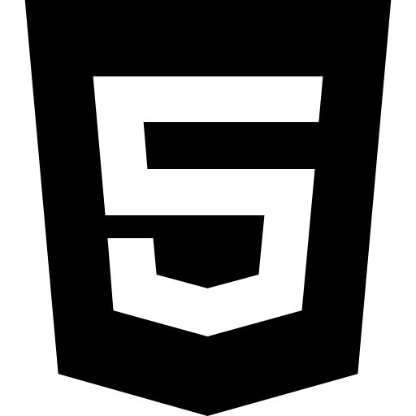

Подпись

Подпись

Подпись

Подпись
ПРОЦЕСС ВЕРСТКИ
Верстка контента

Настройка стилей
Адаптивная верстка

Проверка в браузерах
Устранение ошибок

ПРОФЕССИОНАЛЬНАЯ ВЕРСТКА САЙТОВ
HTML-верстальщик - Рамазанов Рустэм
Верстка контента
Настройка стилей
Адаптивная верстка
Проверка в браузерах
Устранение ошибок
Внезапно исчезать в неизвестном направлении и прекращать выходить на связь, если сроки горят, а работа по какой-то причине еле движется, в мои правила не входит. Называя срок выполнения работы, я всегда закладываю некоторый запас по времени на случай возникновения ситуации, делающей невозможной выполнение работы к предполагаемой мною дате. Тем не менее, от ошибок никто не застрахован. Если пойму, что ошибся с оценкой сроков, либо не рассчитал свои возможности по каким-то иным параметрам, не стану тянуть до последнего момента и сразу сообщу вам об этом.
Каждому клиенту оставляю несколько дополнительных способов оперативной связи в мессанжерах, социальных сетях и на поступившие сообщения отвечаю настолько быстро, насколько это возможно.
Любой шаблон можно сверстать множеством разных способов. Я выбираю такой способ, который на мой взгляд, будет наиболее оптимальным для решения конкретной задачи. Предпочитаю писать все с нуля под каждый конкретный проект, либо использовать свои собственные наработки. Фреймворки по типу Bootstrap не применяю ввиду того, что не вижу ровным счетом никакой необходимости в этом.
HTML-код является "правильным" с точки зрения W3C по стандарту xHTML 1.0 Strict, либо HTML5.
Максимально возможное использование каскадных таблиц стилей в реализации элементов дизайна. Активное использование наследования, дочерних и соседних селекторов, а также псевдоэлементов и, как следствие, отсутствие большого количества мусора в виде лишних классов и снижение в HTML-коде количества разметки, вводимой только для создания элементов оформления. Предпочитаю обходиться минимумом классов. Любимые многими методологии по типу БЭМ использую достаточно редко и лишь там, где это действительно имеет практический смысл с моей точки зрения. В большинстве случаев, с которыми я сталкиваюсь, применение этой методологии (в полной мере) практического смысла лишено и лишь приводит к замусориванию исходного кода страницы.
Так называемая "верстка слоями", "верстка div-ами". Компактность HTML кода. Минимально возможное количество разметки для достижения нужного результата. А, соответственно, несколько большая скорость загрузки страниц, простота понимания разметки для программиста при адаптации под CMS ну и, в конце концов, лучшее отношение поисковых систем к сайту.
Ищу необходимый баланс между "весом" изображения и качеством его отображения для растровых изображений. Векторные SVG также будут максимально очищены от мусора в коде изображений, который генерируют графические редакторы.
Для "оживления" сайта в виде различных слайдеров, всплывающих окон, аккордеонов напдобие этого и т.д. и т.п. использую либо чистый JavaScript, либо осуществляю поиск необходимых скриптов среди готовых решений jQuery, их установку и настройку.
Возможно подключение нестандартных шрифтов. Если шрифт платный, важно, чтобы он был вами легально приобретен. В противном случае, настоятельно рекомендую осуществить замену на любой из бесплатных, допустим, с сервиса Google Fonts.